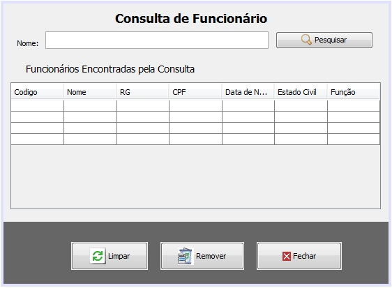
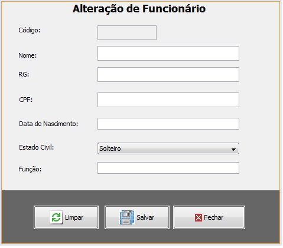
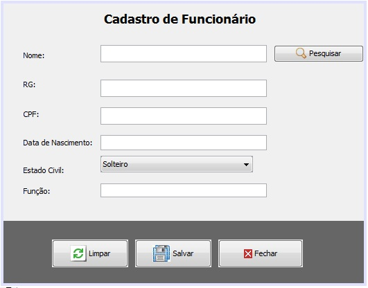
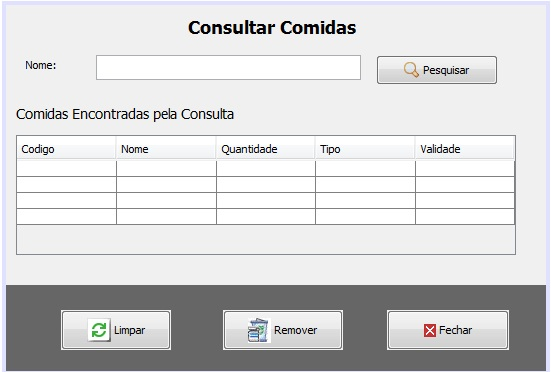
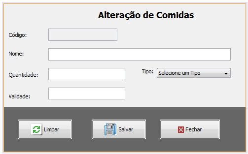
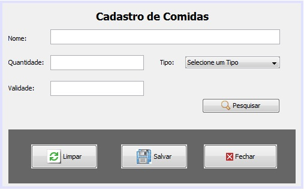
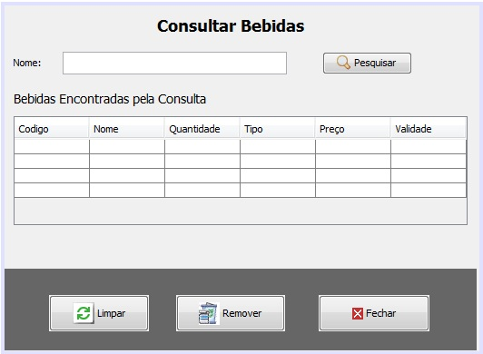
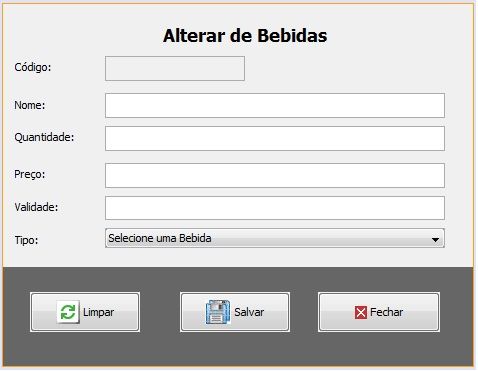
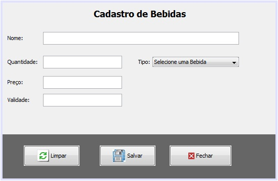

Mapa de Ajuda
Topo
Consultar Funcionário
Descrição: Consulta os funcionários cadastrados no sistema.
- Sistema exibe uma tela onde é possivel se buscar o funcionário desejado.

- Usuário informa o nome do cliente que deseja consultar.
- Para excluir um funcionário o usuário seleciona no índice e clica no botão REMOVER
- Para editar um funcionário, o usuário irá clicar duas vezes sobre o funcionário que deseja editar e então será exibida a tela para a edição do mesmo.
Topo
Alterar Funcionário
Descrição: Altera um funcionário cadastrado no sistema.
- Sistema exibe uma tela onde é possivel se informar os dados dos funcionário.

- Usuário informa os dados do funcionário de acordo com as alterações que deseja fazer.
- Para limpar os campos basta clicar sobre o botão LIMPAR onde os dados dos campos serão limpos.
- Para salvar a edição dos dados basta clicar no botão SALVAR
Topo
Cadastrar Funcionário
Descrição: Cadastra um novo funcionário no sistema.
- Sistema exibe uma tela onde é possivel se cadastrar um novo funcionário.

- Usuário informa os dados do funcionário de acordo com as informações pedidas.
- Para limpar os campos basta clicar sobre o botão LIMPAR onde os dados dos campos serão limpos.
- Para salvar os dados informados basta clicar no botão SALVAR
Topo
Consultar Comida
Descrição: Consulta as comidas cadastradas no sistema.
- Sistema exibe uma tela onde é possivel se buscar a comida desejada.

- Usuário informa o nome do cliente que deseja consultar.
- Para excluir uma comida o usuário seleciona no índice e clica no botão REMOVER
- Para editar uma comida, o usuário irá clicar duas vezes sobre a comida que deseja editar e então será exibida a tela para a edição da mesma.
Topo
Alterar Comida
Descrição: Altera um comida cadastrado no sistema.
- Sistema exibe uma tela onde é possivel se informar os dados da comida.

- Usuário informa os dados da comida de acordo com as alterações que deseja fazer.
- Para limpar os campos basta clicar sobre o botão LIMPAR onde os dados dos campos serão limpos.
- Para salvar a edição dos dados basta clicar no botão SALVAR
Topo
Cadastrar Comida
Descrição: Cadastra uma nova comida no sistema.
- Sistema exibe uma tela onde é possivel se cadastrar uma nova comida.

- Usuário informa os dados da comida de acordo com as informações pedidas.
- Para limpar os campos basta clicar sobre o botão LIMPAR onde os dados dos campos serão limpos.
- Para salvar os dados informados basta clicar no botão SALVAR
Topo
Consultar Bebida
Descrição: Consulta as bebidas cadastradas no sistema.
- Sistema exibe uma tela onde é possivel se buscar a bebida desejada.

- Usuário informa o nome da bebida que deseja consultar.
- Para excluir uma bebida o usuário seleciona no índice e clica no botão REMOVER
- Para editar uma bebida, o usuário irá clicar duas vezes sobre a bebida que deseja editar e então será exibida a tela para a edição da mesma.
Topo
Alterar Bebida
Descrição: Altera um bebida cadastrado no sistema.
- Sistema exibe uma tela onde é possivel se informar os dados da bebida.

- Usuário informa os dados da bebida de acordo com as alterações que deseja fazer.
- Para limpar os campos basta clicar sobre o botão LIMPAR onde os dados dos campos serão limpos.
- Para salvar a edição dos dados basta clicar no botão SALVAR
Topo
Cadastrar Bebida
Descrição: Cadastra uma nova bebida no sistema.
- Sistema exibe uma tela onde é possivel se cadastrar uma nova bebida.

- Usuário informa os dados da bebida de acordo com as informações pedidas.
- Para limpar os campos basta clicar sobre o botão LIMPAR onde os dados dos campos serão limpos.
- Para salvar os dados informados basta clicar no botão SALVAR